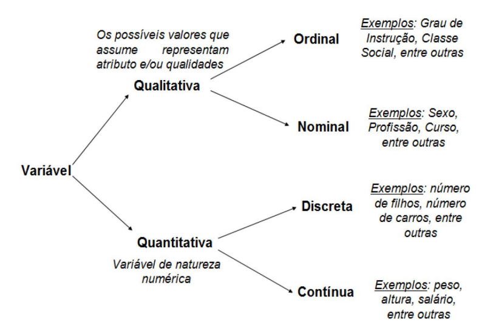

Introdução Interativa a Estatística
1 Introdução à Estatística e à Análise Exploratória de Dados
1.1 O que é Estatística
1.1.1 Definição
Algumas definições para a estatística:
Estatística é a ciência que utiliza as teorias probabilísticas (o que entenderemos na próxima seção) para explicar a frequência da ocorrência de eventos, tanto em estudos observacionais quanto em experimentos para modelar a aleatoriedade e a incerteza de forma a estimar ou possibilitar a previsão de fenômenos futuros, conforme o caso. (Saulo Henrique Weber, 2006)
A Estatística é a ciência que coleta, organiza, analisa, interpreta e apresenta dados. Ela fornece ferramentas e métodos para transformar informações brutas em conhecimento útil, permitindo a tomada de decisões embasadas em evidências. (D.S. Moore, et al., 1999).
Até que um fenômeno de qualquer ramo do conhecimento seja submetido a medidas e números, este não assumirá um status e seriedade na Ciência. Popularmente atribuída à Francis Galton
Estatística é a arte de aprender a partir de dados (Ross, 2010)
Sem dados você é uma pessoa qualquer com uma opinião” William Edwards Deming
“Estatística é”a gramática da Ciência” Karl Pearson
1.1.2 Breve História da Estatística
escrever
Algumas leituras recomendadas são O Andar do Bêbado e Uma Senhora Toma Chá para aprendizado sobre a evolução da histórica da estatística e probabilidade e intuição sobre conceitos complexos.
1.1.3 Importância e Aplicações
A Estatística é fundamental para muitas áreas e aplicável em quase todas porque permite testar hipóteses, validar teorias e generalizar resultados a partir de dados e hoje em dia se coletam dados de quase tudo. Algumas dessas áreas são administração do Estado, otimização de processos industriais e de engenharia, computação, ciências (saúde, biológicas, sociais, física).
Ela nos permite responder questões como:
- Qual tipo e quantidade de dados devo coletar?
- Como organizar e resumir estes dados?
- Como analisar os dados e fazer conclusões dele?
- Como avaliar a força destas conclusões e avaliar sua incerteza?
- Como planejar um experimento que verifique a minha hipótese?
Algumas aplicações específicas são:
- Identificar mensagens indesejáveis em um e-mail (spam);
- Segmentação do comportamento de consumidores para propagandas direcionadas;
- Redução de fraudes em transações de cartão de crédito;
- Predição de eleições;
- Otimização do uso de energia em edifícios;
- Existe relação entre desemprego e procura por Uber?
- Os desembolsos do BNDES fizeram aumentar a taxa de investimento da economia brasileira?
- Como explicar a inflação de alimentos?
- O Banco Central brasileiro reage aos choques cambiais?
- Qual o efeito do aumento da volatilidade no mercado sobre a taxa de câmbio?
1.2 Divisão do Livro
Tradicionalmente se divide didaticamente a estatística nas seguintes partes (o que a ementa dessa disciplina faz e consequentemente esta apostila também):
- Estatística Descritiva: É a área da estatística que visa organizar, resumir e descrever um conjunto de dados
- Estatística Inferencial: Coleção de métodos e técnicas utilizados para estudar uma população baseado em amostras probabilísticas desta população. É uma ferramenta valiosa para tomar decisões e fazer previsões
- Teoria da Probabilidade: Base teórica da estatística, é um ramo da matemática que estuda fenômenos aleatórios, ou seja, eventos cujos resultados não são determinísticos, mas sim sujeitos a incertezas. Ela fornece uma estrutura formal para quantificar a incerteza e modelar situações onde o acaso está presente.
ESCREVER SOBRE O APLICATIVO E A CLASSIFICAÇÃO DAS QUESTÕES
Também haverá seções em cada capítulo onde a aplicação dos conceitos citados será feita nos softwares estatísticos R, Python e aplicativos de planilhas (no caso o Google Sheets, mas o mesmo pode ser aplicado em libreoffice calc ou o clássico Excel)
1.3 Conceitos Básicos
1.3.1 População
Conjunto de todos os elementos com a característica de interesse, sobre a qual desejamos obter informações. A população pode ser finita ou infinita. Representamos por “N” o número de elementos da população. Exemplos: Todos os pacientes com diabetes no Brasil em um determinado ano. Todas as árvores de uma floresta tropical. Todos os carros de um modelo específico em uma concessionária. Todos os acessos a um site em 24 horas
1.3.2 Amostra
É um subconjunto retirado de uma população, obtido através de técnicas de amostragem. O número de elementos da amostra é representado por “n”. Exemplo: Em uma pesquisa eleitoral para saber o resultado das eleições para presidente do Brasil, qual a população de interesse? Qual seria a amostra? R: A população é constituída de todos os eleitores do Brasil. A amostra seria um subconjunto (ex.,de n=2.000 eleitores) da população.

1.3.3 Censo
É o processo utilizado para levantar as características observáveis, abordando todos os elementos de uma população. Então, um levantamento efetuado sobre toda uma população é denominado de levantamento censitário ou simplesmente censo. n https://www.ibge.gov.br/estatisticas/sociais/trabalho/22827-censo-demografico-2022.html escrever breve texto sobre o censo de 2022
1.3.4 Parâmetros
É uma medida fixa (geralmente desconhecida) que descreve uma característica de uma população inteira.
Como se refere a toda a população, seu valor não muda (a menos que a população seja alterada).
Exemplos: Média populacional (μ), desvio padrão populacional (σ), proporção populacional (p).
1.3.5 Estatísticas
É uma medida descritiva calculada a partir de uma amostra (um subconjunto de uma população).
Como a amostra é apenas uma parte da população, a estatística pode variar de amostra para amostra (variabilidade amostral).
Exemplos: Média amostral (xbar), desvio padrão amostral (s), proporção amostral (phat).
1.3.6 Variável
Variável é qualquer característica que varia de um elemento da população para outro. É a característica que está sendo analisada em cada elemento de uma população. Exemplo: Na população funcionários de uma determinada empresa – podemos estudar as varáveis: número de dependentes, remuneração financeira, idade, sexo, local de residência, nível de escolaridade, estado civil, tempo de serviços na empresa, etc.
1.3.7 Estrutura de uma planilha
ESCREVER UM BASICO E ENSINAR R
1.4 Classificação das Variáveis

1.5 Distribuição de Frequências
A distribuição de frequências é uma forma de organizar e resumir dados, mostrando como os valores de uma variável estão distribuídos. Ela pode ser aplicada tanto para variáveis quantitativas (numéricas) quanto para variáveis qualitativas (categóricas).
1.5.1 Distribuição para Variáveis Quantitativas
A distribuição de frequências para variáveis quantitativas é feita agrupando os dados em intervalos de classe ou listando cada valor individualmente.
Passos para Construir a Distribuição: 1. Definir os Intervalos de Classe (para dados contínuos): - Divida os dados em intervalos (ex: 0-10, 10-20, 20-30). - Cada intervalo é chamado de classe. - O tamanho do intervalo é chamado de amplitude de classe e existem várias maneiras de defini-la 2. Contar a Frequência: - Conte quantos valores estão em cada intervalo (frequência absoluta). 3. Calcular Frequências Relativas e Acumuladas: - Frequência relativa: Proporção de valores em cada classe em relação ao total. - Frequência acumulada: Soma das frequências até uma determinada classe.
Formas de definir a amplitude das classes:
EXEMPLO INTERATIVO: COLOCAR LINHAS DE CODIGO E FAZER PERGUNTAS AO LONGO DA EXECUÇÃO COLOCAR NO FINAL O CODIGO QUE FAZ TUDO
1.5.2 Distribuição para Variáveis Qualitativas
A distribuição de frequências para variáveis qualitativas é feita contando a ocorrência de cada categoria.
- Listar as Categorias:
- Contar a Frequência Absoluta
- Calcular Frequências Relativas e Acumuladas
EXEMPLO INTERATIVO: COLOCAR LINHAS DE CODIGO E FAZER PERGUNTAS AO LONGO DA EXECUÇÃO COLOCAR NO FINAL O CODIGO QUE FAZ TUDO
1.6 Medidas de Posição e Dispersão
1.6.1 Média
Média
1.6.2 Mediana
1.6.3 Moda
1.6.4 Desvio Padrão
1.6.5 Variância
1.6.6 Assimetria
1.6.7 Curtose
1.7 Gráficos
1.7.1 Gráficos para Variáveis Qualitativas
1.7.1.1 Barras
1.7.1.2 Colunas
1.7.1.3 Setores
1.7.1.4 Linhas
1.7.2 Gráficos para Variáveis Quantitativas
1.7.2.1 Histograma
1.7.2.2 Polígono de Frequências
1.7.2.3 Boxplot
1.7.2.4 Diagrama de Dispersão
1.8 Análise Bidimensional de Dados
1.8.1 Tabelas de Contingência
Mostram a relação entre duas variáveis categóricas.
1.8.2 Covariância e Correlação
Medem a relação entre variáveis quantitativas. ## Técnicas de Amostragem {#técnicas-de-amostragem}
1.8.3 Amostragem Probabilística (Aleatória)
Envolve seleção aleatória, onde todos os membros da população têm a mesma chance de serem selecionados.
1.8.4 Amostragem Não Probabilística
Não envolve seleção aleatória.
1.8.5 Amostragem Aleatória Simples
Todos os membros da população têm a mesma chance de serem selecionados.
1.8.6 Amostragem Sistemática
A seleção é feita a partir de um intervalo fixo na lista populacional.
1.8.7 Amostragem Estratificada
A população é dividida em estratos, e amostras são retiradas de cada estrato.
1.8.8 Amostragem por Conglomerados
A população é dividida em conglomerados, e alguns conglomerados são selecionados aleatoriamente.
2 Noções de Probabilidade
A probabilidade é um ramo da matemática que estuda a incerteza e a aleatoriedade. Ela fornece ferramentas para quantificar a chance de ocorrência de eventos em situações onde o resultado não é previsível com certeza. Desde previsões do tempo até decisões financeiras, a probabilidade está presente em diversos aspectos da vida cotidiana e é fundamental em áreas como estatística, ciência de dados, física, engenharia, economia e jogos.
2.1 Análise Combinatória
Esse é um assunto difícil e não faz parte do escopo da disciplina, então foque em ter um entendimento intuitivo das ideias contidas nessa sub-seção
…
2.2 Conceitos básicos
2.2.1 Experimento Aleatório
Um experimento aleatório é qualquer processo que pode ser repetido sob as mesmas condições, mas cujo resultado não pode ser previsto com certeza. Exemplos incluem: - Lançar uma moeda; - Jogar um dado; - Sortear uma carta de um baralho; - Número de peças defeituosas em um lote; - Quantidade de chamadas telefônicas em uma hora em um call center
2.2.2 Espaço Amostral
O espaço amostral é o conjunto de todos os resultados possíveis de um experimento aleatório. Por exemplo: - No lançamento de uma moeda: S = {Cara, Coroa}. - No lançamento de um dado: S = {1, 2, 3, 4, 5, 6}. - Considere o exemplo da seção anterior em que observamos o número de chamadas telefônicas que chegam a uma central durante um determinado intervalo de tempo. O espaço amostral é o conjunto: S = {0,1,2, 3,…}.
EXEMPLO: LANÇAMENTO DE DUAS MOEDAS, EXPLANAÇÃO RAPIDA DE ANALISE COMBINATORIA
Exercício: pense e delimite (nao precisa escrever, só raciocinar) qual o tamanho do espaço amostral e quais são os elementos do espaço amostral de uma mão no jogo truco. Se você não sabe truco, faça o mesmo com o sorteio aleatório de uma carta.
2.2.3 Eventos
Um evento é um subconjunto do espaço amostral. Ele representa um resultado ou uma combinação de resultados de interesse. Por exemplo: - No lançamento de um dado, o evento “sair um número par” é o subconjunto {2, 4, 6}. - Na retirada de uma mão no truco em que a vira é o Ás o evento “tirar as 4 cartas mais fortes” é o subconjunto {2 de espadas, 2 de ouros, 2 copas, 2 de paus}
2.3 Definição de Probabilidade
A probabilidade, em termos informais, é uma medida que quantifica a chance de um evento ocorrer. Ela é representada por um número entre 0 e 1, onde:
0: O evento é impossível (nunca ocorre).
1: O evento é certo (sempre ocorre).
A probabilidade de um evento A é denotada por P(A)
\[ P(A) = \frac{n(A)}{n(\Omega)} \]
Onde: - n(A): Número de resultados favoráveis ao evento - n(Ω): Número total de resultados possíveis no espaço amostral
2.3.1 Axiomas da Probabilidade
Regras básicas que definem a probabilidade.
2.3.2 Propriedades Fundamentais
Propriedades derivadas dos axiomas.
2.4 Probabilidade Condicional e Teorema de Bayes
2.4.1 Probabilidade Condicional
Probabilidade de um evento dado que outro ocorreu.
2.4.2 Teorema de Bayes
Relaciona probabilidades condicionais.
2.5 Independência de Eventos
2.5.1 Definição de Independência
Dois eventos são independentes se a ocorrência de um não afeta a probabilidade do outro.
2.5.2 Exemplos de Independência
Exemplos práticos de eventos independentes.
2.6 Variáveis Aleatórias
2.6.1 Variáveis Aleatórias Discretas
Assumem valores contáveis.
2.6.2 Variáveis Aleatórias Contínuas
Assumem valores em um intervalo.
2.7 Distribuições de Probabilidade
2.7.1 Distribuições Discretas
Binomial, Poisson.
2.7.2 Distribuições Contínuas
Exponencial, Normal.
3 Noções de Inferência Estatística
3.1 Parâmetros, Estimadores e Estimativas
3.1.1 Parâmetros
Características da população.
3.1.2 Estimadores
Funções dos dados usadas para estimar parâmetros.
3.1.3 Estimativas
Valores calculados a partir dos dados.
3.2 Distribuição Amostral
3.2.1 Distribuição da Média
Distribuição da média amostral.
3.2.2 Distribuição da Proporção
Distribuição da proporção amostral.
3.2.3 Distribuição da Diferença de Médias
Distribuição da diferença entre médias amostrais.
3.3 Intervalo de Confiança
3.3.1 Intervalo para a Média
Intervalo de confiança para a média populacional.
3.3.2 Intervalo para a Proporção
Intervalo de confiança para a proporção populacional.
4 Noções de Regressão Linear Simples
4.1 Conceitos
4.2 Estimação dos Parâmetros
4.3 Coeficiente de Determinação
5 Apêndices
5.1 Arquivos de Aulas
5.2 Introdução a R
Essa será uma breve introdução a R para poder entender como funciona a linguagem de programação e já brincar com estatística utilizando funções mais elementares, as mais importantes, como calcular medidas simples como média, moda, mediana, criação de gráficos e tabelas e elaboração de regressões simples. Para maiores discussões sobre tipos avançados de visualização ver o livro R para Ciência de Dados: https://pt.r4ds.hadley.nz/
EXPLICAR COMENTARIOS
Sugere-se ao/a professor/a uma leitura rápida desta seção após uma curta introdução para o/a aluno/a começar a se familizar com os conceitos, após isso esta seção pode servir como consulta para sintaxe e ajuda rápida
5.2.1 Instalação do ambiente Rstudio
A instalação é trivial, basta baixar e executar o R em https://cran.rstudio.com/ e baixar o Rstudio https://posit.co/download/rstudio-desktop/ em seguida
Para usar o Rstudio, basta abrir um script com Ctrl + Shift + N e para executar códigos basta selecionar a linha com o mouse e teclar Ctrl + Enter
Para quaisquer dificuldades: https://www.youtube.com/watch?v=a4_0pKVY6RE&list=PLs7DH7eMtNjcfzzZT6beLu0nmSr2yIhIr&index=2
5.2.2 Libraries (Libs ou Bibliotecas)
Em programação, uma library (biblioteca) é um conjunto de códigos pré-escritos (funções, classes, métodos, variáveis) que podem ser reutilizados para facilitar o desenvolvimento de software. Elas são criadas para resolver problemas específicos, evitando que os programadores tenham que “reinventar a roda” a cada projeto.
Exemplo (o aluno é encorajado a copiar e executar o código na própria máquina):
Code
# dplyr é uma biblioteca para lidar com bancos de dados e ggplot2 é uma biblioteca para visualização, teremos um capítulo explicando cada uma delas
library(dplyr)
library(ggplot2)
# Filtrar dados e criar gráfico
dados <- mtcars %>%
filter(mpg > 20) %>%
ggplot(aes(x = wt, y = mpg)) +
geom_point() +
labs(title = "Relação Peso vs. Consumo")| Categoria | Biblioteca | Descrição | Exemplo de Uso |
|---|---|---|---|
| Manipulação de Dados | dplyr | Ferramentas para filtrar, agrupar e sumarizar dados | `dados %>% filter(coluna > 10) %>% group_by(...)` |
| tidyr | Organização e limpeza de dados (pivotagem, separação de colunas) | `pivot_longer(dados, cols = c(...))` | |
| Visualização | ggplot2 | Criação de gráficos elegantes e personalizáveis | `ggplot(dados, aes(x, y)) + geom_point()` |
| plotly | Gráficos interativos (3D, hover effects) | `plot_ly(dados, x = ~x, y = ~y, type = 'scatter')` | |
| Análise Estatística | stats | Funções estatísticas básicas (testes t, ANOVA, regressão) | `t.test(x, y)` |
| lme4 | Modelos lineares mistos (para dados hierárquicos) | `lmer(resposta ~ preditor + (1|grupo))` | |
| Machine Learning | caret | Treinamento e validação de modelos preditivos | `train(classe ~ ., data = dados, method = "rf")` |
| randomForest | Algoritmo de florestas aleatórias para classificação/regressão | `randomForest(y ~ ., data = dados)` | |
| Text Mining | tm | Mineração e pré-processamento de textos | `Corpus(VectorSource(textos)) %>% tm_map(...)` |
| tidytext | Análise de texto integrada ao tidyverse | `unnest_tokens(dados, palavra, texto)` | |
| Geoprocessamento | sf | Manipulação de dados espaciais (vetores) | `st_read("caminho/shapefile.shp")` |
| raster | Análise de dados raster (imagens de satélite, mapas) | `raster("imagem.tif") %>% plot()` | |
| Reprodutibilidade | knitr | Geração de relatórios dinâmicos (HTML, PDF) | `knit("documento.Rmd")` |
| rmarkdown | Integração de código, texto e visualizações em documentos | `render("relatorio.Rmd")` |
5.2.3 Variáveis
Uma variável é um nome simbólico que armazena um valor ou dado na memória do computador. Em R, as variáveis são usadas para guardar informações que podem ser manipuladas durante a execução de um código.
Tipos de variáveis:
5.2.3.1 Numérica (numeric)
Armazenam números (inteiros ou decimais).
5.2.3.2 Caracteres (character ou string)
Armazenam caracteres ou conjuntos de caracteres (strings), para manipulação de strings ver o capítulo 14 do r4ds. Algumas coisas que podem ser feitas são transformar todos os caracteres em maiúsculos ou minúsculos, retirar acentos, caracteres especiais, retirar padrões do texto, separar em várias strings separando por um delimitador (como o espaço), calcular o tamanho de uma string. Enfim, várias utilidades bem úteis para lidar com dados de texto.
5.2.3.3 Lógicas (logical ou boolean)
Armazenam valores lógicos: verdadeiro ou falso São bem úteis para verificação de estruturais condicionais que são demonstradas na seção ESCREVER SECAO
5.2.3.4 Fatores (factor)
São categorias Equivale a variável categóricas ordinal ou nominal, explicada no capítulo: COLOCAR CAPÍTULO
Code
[1] Baixo Médio Alto
Levels: Baixo < Médio < Alto[1] A B A C
Levels: A B C5.2.3.5 Datas (Date ou POSIXct)
Armazenam datas e horários Para maiores discussões sobre datas ver capítulo 17 de r4ds
5.2.3.6 Vetores (vector)
Coleção de elementos do mesmo tipo Se você colocar uma letra no meio dos números todos os números serão tratados como letras (caso tenha se perguntado isso)
5.2.3.7 Listas (list)
5.2.3.8 Data Frames (data.frame)
5.2.3.9 Matrizes
5.2.4 Operações
Toda linguagem de programação tem as operações matemáticas elementares implementadas, vamos estudar sua sintaxe:
| Operação | Símbolo Matemático | Sintaxe em R |
|---|---|---|
| Adição | a + b | `a + b` |
| Subtração | a - b | `a - b` |
| Multiplicação | a × b | `a * b` |
| Divisão | a ÷ b | `a / b` |
| Potenciação | a^b | `a ^ b` ou `a ** b` |
| Raiz quadrada | va | `sqrt(a)` |
| Logaritmo natural | ln(a) | `log(a)` |
| Logaritmo base 10 | log10(a) | `log10(a)` |
| Módulo (resto da divisão inteira) | a mod b | `a %% b` |
5.2.5 Estruturas Condicionais
As estruturas condicionais permitem que você execute diferentes blocos de código com base em condições específicas. As principais estruturas condicionais em R são:
if em inglês significa “se”, então em na estrutura de uma frase temos: se ‘condição’, então ‘codigo’
Modelo:
Exemplo: Se x for maior que 5 então aparece na tela a mensagem especificada

Basicamente um se ou se não
Exemplo:
[1] "x não é maior que 5"
Também pode-se “aninhar” várias estruturas condicionais. “Aninhar” significa colocar uma atrás da outra em uma hierarquia
Modelo:
Code
[1] "x está entre 5 e 10"
Em estatística operações vetorizadas são muito importantes, digamos que você é um estatístico em uma empresa de crédito e você tem um dado de quantos dias os clientes estão em atrasado com o pagamento das parcelas de um empréstimo, mas você quer um indicador simples de ele estar inadimplente ou não (ou seja, uma variável booleana ou lógica), então é útil fazer um ifelse vetorizado com uma condição de, por exemplo, ele estar inadimplente se a dívida passar de 90 dias:
Modelo:
Exemplo simples:
Code
[1] "ímpar" "par" "ímpar" "par" "ímpar" "par" "ímpar" "par" "ímpar"
[10] "par" Exemplo de uso: ESCREVER O EXEMPLO
Quando é necessário escolher entre várias opções, por exemplo uma caixa de seleção em um formulário, pode ser ineficaz ficar aninhando várias ifs e else, para isso que serve a estrutura condicional switch/case, implementada da seguinte maneira em R:
Modelo:
Exemplo simples:
Code
[1] 8Exemplo prático:
ESCREVER
5.2.6 Estruturas de Laço (loop)
Em programação, muitas vezes é necessário repetir uma operação várias vezes com base em uma condição ou ‘iterando’ por um vetor ou alguma estrutura de dados (iterar significa repetir ou passar sequencialmente). Existem duas estruturas principais para isso: o WHILE e o FOR
While significa enquanto, então enquanto uma determinada condição for verdadeira
5.2.7 Funções
5.2.8 Importação de Dados
Trabalhamos com dados em estatística, então isso é a coisa mais importante para aprender kkkkkk. Felizmente temos tudo pronto (implementado) em R, se vc for tentar se aventurar a fazer isso em C vai ser bem difícil. Existem vários tipos de dados, mas a forma de importá-los é semelhante e simples, porém deve-se atentar a alguns detalhes. Principais tipos de arquivos de dados:
COLOCAR UMA TABELA
FALAR SOBRE DELIMITADORES DE MILHAR E DECIMAL E ASCII
5.2.9 Manipulação de Dados
Lembre-se de que tudo aqui é uma introdução, essa parte é relativamente confusa, para mais informações consulte o cap TAL de r ESCREVER DEPOIS ### Gráficos
5.3 Introdução a Python
5.3.1 Introdução ao google collab
Existem várias plataformas que te permitem codar em python. Google Collab é uma plataforma web com tudo já pronto para executar códigos
5.3.2 Libraries (Libs ou Bibliotecas)
5.4 Dicas de geração de código com IA
As IAs são ferramentas extremamente úteis e válidas no contexto da programação. Primeiramente nenhuma IA fará milagres, você precisa ser claro e evidente nas suas perguntas, como diria algum matemático: “Uma pergunta bem formulada já está respondida” Existem tarefas de programação que até o mais entendido de programação terá que ler a documentação de várias bibliotecas e raciocionar muito tempo para executar, a IA facilita esse trabalho fazendo o trabalho duro de gerar código. Como diriam muitos programadores, a tarefa de gerar código é a mais trivial, o importante é juntar aqueles códigos em algo que faça sentido, outra coisa que eles dizem é que se passa muito mais tempo debugando um código do que gerando ele em si, primeiro se pensa a lógica depois os problemas são solucionados um a um. E é aí que entramos. A IA tem o papel de gerar código e nós de checar se ele faz sentido, se ela não está alucinando, esse tipo de coisa
6 Créditos e Agradecimentos
DIEGO e seus slides maravilhosos